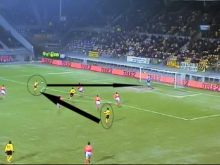

|
Roda JC - AZ (1-4) 26 januari 2006
2 |
Voor de derde keer op rij in een thuiswedstrijd is er sneeuw. Hier is zojuist
een automobilist in de boeien geslagen omdat hij geen gehoor wilde geven
aan de instructies van stewards en politie. Daarbij zijn klappen gevallen.
Sinds lange tijd zeilt het grote doek weer over de westtribune.
De nummer twee van Nederland heeft een triest aantal uitsupporters: 22!
Bij -5 graden start het duel met Voigt in de basis al vervanger voor de
geschorste Lachambre.
Al in de tweede minuut komt Roda op achterstand. Arveladze kromt de bal
vanuit bijna onmogelijke positie in de lange hoek: 0-1.
Na de slechte start komt Roda beter in het spel en dicteert het zelfs de
wedstrijd. Er volgen veel goede kansen voor met name Cissé die veel
vrijheid krijgt.
Hier schiet Cissé erg ver naast.

Goede pass van Cziommer op Oper die zijn schot knap door Timmer
weggewerkt ziet worden.
Timmer raakt geblesseerd maar kan doorspelen.
Ne een brede aanval waar Sergio de bal bij Voigt legt kan de Duitser mooi
in de rechterhoek schieten: 1-1, (18').
De verdiende gelijkmaker wordt gevierd.
Een gele kaart voor Van Galen na een overtreding op Bodor.
Roda komt er herhaaldelijk goed uit met zoals bijvoorbeeld hier een prima
kans voor Oper. Zijn schot gaat naast.
Een schot van De Cler wordt weggestompt door Kujovic.
Zodoende krijgt Arveladze de bal cadeau. Hij kan simpel intikken waardoor
de stand op 1-2 komt, (39').
Vreugde bij de AZ-spelers en een domper voor het thuispubliek zo vlak voor
de rust.
De terechte protesten van Van Dijk bij Braamhaar. De scheidsrechter kent
AZ een vrije trap toe omdat de doorgebroken Arveladze onderuit zou zijn
gehaald.
Terwijl deze sponsor
nog zijn handen ontdooit, valt alweer de derde treffer
voor AZ.
Huysegems scoort al dan niet buitenspel, 1-3, (48'). (Foto:
SV-online).
Vijf minuten later is het 1-4 door weer een treffer van Arveladze, (53').
Een dubbele wissel bij Roda. Sergio en Bodor gaan eruit voor Leemans en
Colinet. Nog geen 10 minuten later wordt Oper vervangen door Cristiano.
Trainer Stevens lijkt te berusten in de nederlaag en spaart deze spelers
voor het aanstaande bekerduel tegen Helmond Sport.
Er volgen nog een handvol kansen voor beide ploegen, maar de echte
spanning en bezieling zijn uit de wedstrijd.
De 1-5 komt enkele malen angstvallig dichtbij, zeker nadat Senden na een
blessure aan het bovenbeen het veld heeft moeten verlaten. Roda speelt al
die tijd met tien tegen elf; er mag immers niet meer gewisseld worden.
Ondanks de kansloze missie bleven veel supporters de club toe-zingen.
Snel de nederlaag wegspoelen in de Kickoff en vooral..... ontdooien
!!
Anouk had op Cziommer gehoopt, maar deze vond ze ook wel knap....
Naast Cissé en Vicelich was Castro te gast in de Kickoff.
Davke is trots op zijn vriendinneke.
©
Koempels Pleasure Dome
|